This guide covers all of Midnight Jewelcrafting. You'll find every weekly and one-time Knowledge source, profession equipment, renown-gated recipes, and full recipe lists for gems, jewelry, profession tools, PvP crafts, reagents, and house decor.
Midnight Jewelcrafting Changes
Most of the Jewelcrafting system is the same as in The War Within. Only a few things have changed, so if you understood Jewelcrafting there, you will have no trouble adapting to Midnight.
- Quality Changes - Gems and reagents now only have two quality levels (Silver and Gold) instead of three.
- Raw Gems Have Quality - All raw uncut gems now have quality (Silver and Gold) unlike in TWW where they had none. Eversong Diamonds are the exception and remain quality-less.
- Artisan Jewelcrafter's Moxie - The BoP currency
 Artisan's Acuity that you got from earning profession Knowledge in The War Within has been changed to a profession-specific currency,
Artisan's Acuity that you got from earning profession Knowledge in The War Within has been changed to a profession-specific currency,  Artisan Jewelcrafter's Moxie. You can now only use it for Jewelcrafting-specific recipes.
Artisan Jewelcrafter's Moxie. You can now only use it for Jewelcrafting-specific recipes. - Epic Profession Tools - Epic-quality profession tools have been added. They provide the same skill bonus as Rare tools but come with higher secondary stats (Resourcefulness, Multicraft, etc.).
- Vials Lost a Crafted Tier - In The War Within, vendors sold bronze-quality vials so crafters could profit from selling silver and gold. With bronze quality gone, vendors now sell silver, so only gold-quality vials are worth crafting.
- No Extra Socket Consumable - There is no item that adds sockets to gear in Midnight (apart from the Great Vault). Players rely on sockets naturally dropping on their gear, so cut gem demand will be lower than in TWW where you could add sockets to all your jewelry.
Weekly Jewelcrafting Knowledge in Midnight
In Midnight, there are four weekly sources of profession Knowledge, giving you around 32 Knowledge Points per week. Patron Crafting Orders are your main source, supplemented by treasure drops, a weekly quest, and an Inscription treatise.
| Source | Details |
|---|---|
| Patron Crafting Orders (~24 KP) | Patron orders are the main source of Knowledge Points. You will receive multiple orders throughout the week. Some of them will reward you with |
| Weekly Quest (3 KP) | Your profession trainer will offer a weekly quest that asks you to complete 3 Crafting Orders. This rewards a |
| Weekly Drops (4 KP) | Each week, you can loot 1 of each of the following items from treasures scattered around the new zones: Void-Touched Eversong Diamond Fragments and 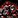 Harandar Stone Sample. |
| Inscription Treatise (1 KP) | To get a |
| Darkmoon Faire (3 KP / month) | Once a month, the Darkmoon Faire comes to town and you can complete a quick profession quest for +3 Knowledge Points and +2 Profession Skill. It's not a weekly source, but don't skip it. The Faire starts on the Sunday before the first Monday of each month. |
| Catch-up System | If you fall behind or start late, you will receive |
One-Time Jewelcrafting Knowledge in Midnight
These are one-time sources of Knowledge Points that you can collect once per character. Treasures are scattered across all Midnight zones and give 3 KP each.
Renown Knowledge Book
 Skill Issue: Jewelcrafting is sold by the Silvermoon Court Renown Quartermaster Caeris Fairdawn in Eversong Woods.
Skill Issue: Jewelcrafting is sold by the Silvermoon Court Renown Quartermaster Caeris Fairdawn in Eversong Woods.
Midnight Jewelcrafting Treasures
There are 8 Jewelcrafting treasures in Midnight, giving 24 Knowledge Points total (3 KP each).
| Treasure | Zone | Map |
|---|---|---|
| Sin'dorei Masterwork Chisel | Silvermoon City | |
| Vintage Soul Gem | Silvermoon City | |
| Poorly Rounded Vial | Eversong Woods | |
| Sin'dorei Gem Faceters | Eversong Woods | |
| Speculative Voidstorm Crystal | Voidstorm | |
| Ethereal Gem Pliers | Voidstorm | |
| Shattered Glass | Slayer's Rise | |
| Dual-Function Magnifiers | Silvermoon City |
TomTom Waypoints & Treasure Check Macro
TomTom Waypoints
/ttpaste in-game/way #2393 50.6, 56.6 Sin'dorei Masterwork Chisel /way #2393 55.4, 48.0 Vintage Soul Gem /way #2395 56.6, 40.9 Poorly Rounded Vial /way #2395 39.6, 38.9 Sin'dorei Gem Faceters /way #2444 30.5, 69.1 Speculative Voidstorm Crystal /way #2444 54.2, 51.2 Ethereal Gem Pliers /way #2444 62.7, 53.4 Shattered Glass /way #2393 28.6, 46.5 Dual-Function Magnifiers
Treasure Check Macro
true = collectedJewelcrafting Specializations
There are four specialization trees, unlocked at skill levels 25, 50, 60, and 75. Pick based on what you want to craft and sell.
- Glamorous Gems - Gem cuts and Prisms, one sub-spec per color.
- Alluring Accessories - Epic rings, necklaces, and profession accessories for JC, Enchanting, and Inscription.
- Proficient Processor - Reagents, plus Prospecting and Crushing improvements.
- Thoughtful Throughput - Crafting stats.
Midnight Jewelcrafting Specialization Guide & Best Builds
Prospecting & Crushing
Prospecting and Crushing are Jewelcrafting's two raw material processing abilities, both learned from the trainer early on. Prospecting breaks down 5 ore into gems and reagents, while Crushing turns uncut gems into Glimmering Gemdust. The Proficient Processor specialization tree improves both activities through dedicated sub-specs.
Crushing
Crushing turns uncut gems into Glimmering Gemdust, which is used in many Jewelcrafting recipes. Both uncommon and rare gems have the same Gemdust yield, roughly ~0.67 per crush (with talents). Since uncommon gems are not used in many crafts, they will likely be cheaper on the Auction House, making them the more cost-effective choice for Crushing.
Prospecting
Every prospect yields 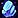 Duskshrouded Stone and Crystalline Glass as guaranteed reagents. On top of that, each ore type drops specific gems.
Duskshrouded Stone and Crystalline Glass as guaranteed reagents. On top of that, each ore type drops specific gems.
| Ore | Uncommon Gems | Rare Gems | Epic Gem |
|---|---|---|---|
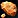 Refulgent Copper |
None | Eversong Diamond ~2.5% | |
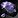 Umbral Tin |
|
Eversong Diamond ~4.5% | |
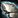 Brilliant Silver |
|
Eversong Diamond ~4.5% | |
| None | Eversong Diamond ~22% |
Profession Equipment
Epic profession tools are new in Midnight. In The War Within, professions only had Green and Rare tools. Epic tools give the same Skill as Rare, but have higher secondary stats like Resourcefulness, Multicraft, and Ingenuity.
Profession Gear for Jewelcrafters
Jewelcrafters craft their own Loupes (accessory). Your Tool comes from Engineering, and the second Accessory (Cover) comes from Leatherworking.
| Slot | Crafted By | Green Quality | Blue Quality | Epic Quality |
|---|---|---|---|---|
| Tool | Engineering | Farstrider Clampers | Sin'dorei Clampers | Giga-Gem Grippers |
| Accessory | Jewelcrafting | |||
| Accessory | Leatherworking |
Craftable Profession Equipment
Jewelcrafters craft profession accessories for Inscription and Enchanting.
| Profession | Green Quality | Blue Quality | Epic Quality |
|---|---|---|---|
| Inscription | |||
| Inscription | |||
| Enchanting |
Renown Recipes
Jewelcrafting has a couple of epic rings and a House Decor recipe locked behind faction Renown. You need Renown Rank 5 with each faction. The two rings are the important ones here since they are crafted epic gear.
| Recipe | Description | Faction | Vendor |
|---|---|---|---|
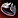 Loa Worshiper's Band |
Epic ring | Amani Tribe (Rank 5) | Magovu |
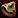 Signet of Azerothian Blessings |
Epic ring | Hara'ti (Rank 5) | Naynar |
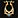 Bejeweled Sin'dorei Lyre |
House Decor | Silvermoon Court (Rank 5) | Caeris Fairdawn |
Gems
Gems are the core of Jewelcrafting. There are four gem colors in Midnight, each with a primary stat: Garnet (red, Critical Strike), Amethyst (purple, Mastery), Lapis (blue, Versatility), and Peridot (green, Haste). Every color has one pure single-stat gem and three hybrid dual-stat gems. Each cut has an uncommon version and a rare Flawless upgrade with higher stat values. Eversong Diamonds are epic meta gems that grant Primary Stat plus a special effect.
| Recipe | Stats | Source |
|---|---|---|
| Deadly Garnet | Critical Strike | Trainer (10) |
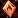 Flawless Deadly Garnet |
Critical Strike | Trainer (50) |
| Quick Garnet | Critical Strike & Haste | Trainer (20) |
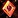 Flawless Quick Garnet |
Critical Strike & Haste | Spec: Glamorous Gems |
| Masterful Garnet | Critical Strike & Mastery | Trainer (25) |
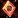 Flawless Masterful Garnet |
Critical Strike & Mastery | Spec: Glamorous Gems |
| Versatile Garnet | Critical Strike & Versatility | Trainer (30) |
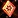 Flawless Versatile Garnet |
Critical Strike & Versatility | Spec: Glamorous Gems |
| Recipe | Stats | Source |
|---|---|---|
| Masterful Amethyst | Mastery | Trainer (10) |
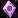 Flawless Masterful Amethyst |
Mastery | Trainer (50) |
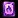 Deadly Amethyst |
Mastery & Critical Strike | Trainer (20) |
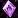 Flawless Deadly Amethyst |
Mastery & Critical Strike | Spec: Glamorous Gems |
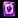 Quick Amethyst |
Mastery & Haste | Trainer (25) |
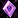 Flawless Quick Amethyst |
Mastery & Haste | Spec: Glamorous Gems |
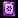 Versatile Amethyst |
Mastery & Versatility | Trainer (30) |
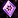 Flawless Versatile Amethyst |
Mastery & Versatility | Spec: Glamorous Gems |
| Recipe | Stats | Source |
|---|---|---|
| Versatile Lapis | Versatility | Trainer (10) |
| Flawless Versatile Lapis | Versatility | Trainer (50) |
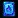 Deadly Lapis |
Versatility & Critical Strike | Trainer (15) |
| Flawless Deadly Lapis | Versatility & Critical Strike | Spec: Glamorous Gems |
| Masterful Lapis | Versatility & Mastery | Trainer (20) |
| Flawless Masterful Lapis | Versatility & Mastery | Spec: Glamorous Gems |
| Quick Lapis | Versatility & Haste | Trainer (25) |
| Flawless Quick Lapis | Versatility & Haste | Spec: Glamorous Gems |
| Recipe | Stats | Source |
|---|---|---|
| Quick Peridot | Haste | Trainer (10) |
| Flawless Quick Peridot | Haste | Trainer (50) |
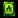 Deadly Peridot |
Haste & Critical Strike | Trainer (15) |
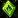 Flawless Deadly Peridot |
Haste & Critical Strike | Spec: Glamorous Gems |
| Masterful Peridot | Haste & Mastery | Trainer (20) |
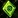 Flawless Masterful Peridot |
Haste & Mastery | Spec: Glamorous Gems |
| Versatile Peridot | Haste & Versatility | Trainer (25) |
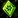 Flawless Versatile Peridot |
Haste & Versatility | Spec: Glamorous Gems |
Meta gems require an Eversong Diamond to craft and go into meta sockets. All four recipes drop from Midnight dungeons.
| Recipe | Effect | Source |
|---|---|---|
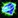 Indecipherable Eversong Diamond |
Primary Stat | Drop: Midnight Dungeons |
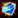 Powerful Eversong Diamond |
Primary Stat, +Crit effectiveness per unique gem color | Drop: Midnight Dungeons |
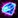 Stoic Eversong Diamond |
Primary Stat, Armor | Drop: Midnight Dungeons |
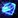 Telluric Eversong Diamond |
Primary Stat, Max Mana per unique gem color | Drop: Midnight Dungeons |
Jewelry
Rings and necklaces are always in high demand. The Epic versions are best-in-slot and come from vendors and world drops.
Rings
| Recipe | Source |
|---|---|
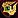 Gleaming Copper Band |
Trainer (20) |
| Loa Worshiper's Band | Vendor: Magovu (Zul'Aman) |
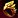 Masterwork Sin'dorei Band |
Spec: Alluring Accessories |
| Signet of Azerothian Blessings | Vendor: Naynar (Harandar) |
Necklaces
| Recipe | Source |
|---|---|
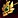 Masterwork Sin'dorei Amulet |
Spec: Alluring Accessories |
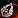 Nocturnal Charm |
Trainer (30) |
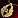 Thalassian Phoenix Torque |
Drop: Belo'ren (Isle of Quel'Danas) |
| Voidstone Shielding Array | Drop: Charonus (Voidscar Arena) |
PvP Items
PvP gems and jewelry purchased from Mirvedon in Silvermoon City using Honor. The Heliotrope gems are Epic-quality PvP gems with unique combat effects. The necklace and ring are entry-level PvP jewelry.
| Recipe | Description | Source |
|---|---|---|
| Cognitive Heliotrope | +Primary Stat, opponent's failed interrupt grants Precognition | Vendor: Mirvedon (Silvermoon City) |
| Determined Heliotrope | +Primary Stat, getting snared increases damage of your next attack | Vendor: Mirvedon (Silvermoon City) |
| Enduring Heliotrope | +Primary Stat, +Damage Reduction when affected by Crowd Control | Vendor: Mirvedon (Silvermoon City) |
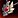 Thalassian Competitor's Amulet |
PvP Necklace | Vendor: Mirvedon (Silvermoon City) |
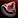 Thalassian Competitor's Signet |
PvP Ring | Vendor: Mirvedon (Silvermoon City) |
Reagents & Prisms
Reagents are the intermediate materials you need for crafting gems, jewelry, and profession accessories. Crushing and Prospecting let you break down ore into raw gems and dust.
Reagents
| Recipe | Description | Source |
|---|---|---|
| Crafting Reagent | Trainer (5) | |
| Crafting Reagent | Trainer (10) | |
| Crafting Reagent | Trainer (40) | |
| Optional Reagent | Drop: Lothraxion (Nexus-Point Xenas) | |
| Optional Reagent | Drop: Heavy Trunk (Delves) |
Gem Prisms
Each gem color has a Prism recipe unlocked deep in its Glamorous Gems specialization tree (15 points). All four prisms use a single  Kaleidoscopic Prism as their only reagent.
Kaleidoscopic Prism as their only reagent.
Kaleidoscopic Prism itself is a trainer recipe (skill 40) that requires one of each Flawless raw gem plus 10 Gemdust:
- 1x Flawless Sanguine Garnet
- 1x
 Flawless Tenebrous Amethyst
Flawless Tenebrous Amethyst - 1x
 Flawless Amani Lapis
Flawless Amani Lapis - 1x
 Flawless Harandar Peridot
Flawless Harandar Peridot - 10x Glimmering Gemdust
| Prism | Contains | Spec Path |
|---|---|---|
| 4-6x Flawless Sanguine Garnet | Glamorous Gems - Glorious Garnet (15) | |
| 4-6x |
Glamorous Gems - Austere Amethyst (15) | |
| 4-6x |
Glamorous Gems - Lustrous Lapis (15) | |
| 4-6x |
Glamorous Gems - Powerful Peridot (15) |
House Decor
Jewelcrafting can craft decorative items for player housing. These come from trainers, vendors, world drops, and Delve chests.
| Recipe | Source |
|---|---|
| Bejeweled Sin'dorei Lyre | Vendor: Caeris Fairdawn (Eversong Woods) |
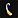 Brilliant Phoenix Harp |
Trainer (80) |
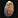 Replica Haranir Mural |
Drop: Heavy Trunk (Delves) |
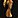 Resplendent Highborne Statue |
Drop: Eversong Treasures |
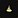 Shining Sin'dorei Hourglass |
Treasure: Challenger's Cache |
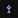 Tenebrous Ren'dorei Armillary |
Trainer (80) |